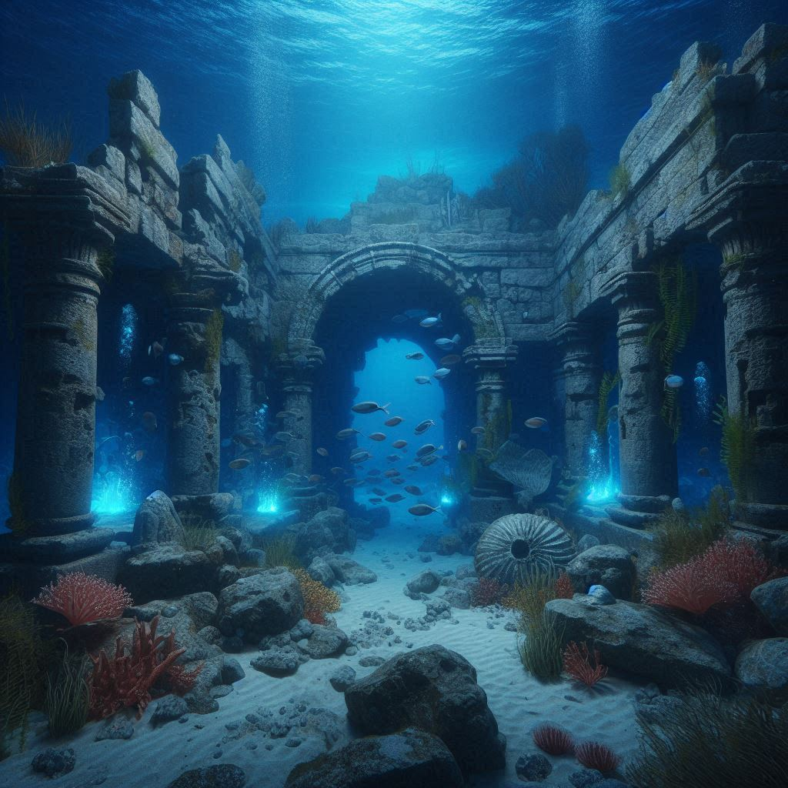

THE SUNKEN CIVILIZATION

Atlantis ennal sea-kku aduthulla oru lost civilization aanu. Famous philosopher Plato aanu 2,300 varshangalkku munbe ithine kurichu adyam ezhuthiyath. Plato-yude parayam anusarichu, Atlantis valareyadhikam advanced aayirunnu, pakshe oru divasavum oru rathriyum kondu athu ocean-u adiyilekku tholanju poyi.
Ithuvare oru real evidence kittiയിട്ടില്ല എങ്കിലും pala theories undu:
| THEORY | DESCRIPTION |
|---|---|
| Minoan Eruption | Santorini island-ile volcanic eruption kaaranam Atlantis sank aayi. |
| Antarctica | Frozen aayi kidakkunna Antarctica sathyathil Atlantis aayirunno? |
| Eye of Sahara | Africa-ile Sahara desert-ile strange circles sathyathil Atlantis-inte location aavam. |
Pala myth-ukalum parayunnath Atlantis-il Energy Crystals undayirunnu ennanu. Avarude technology nammude modern tech-inekkal advanced aayirunnu ennum, athinte overuse kaaranamaavaam city nashichath ennum karuthappedunnu.
Atlantis real aano atho Plato-yude oru moral story mathramano? Deep ocean-il ippozhum 95% nammal explore cheythittilla. Maybe oru divasam nammal ee lost world-inte vaathilkal ethum. 😌